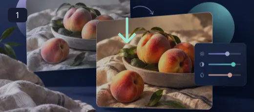
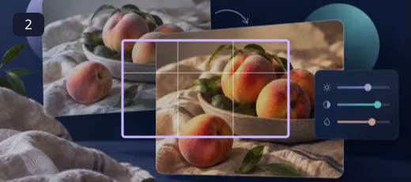
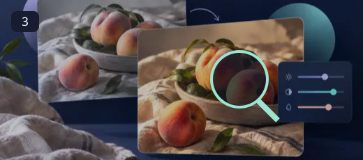
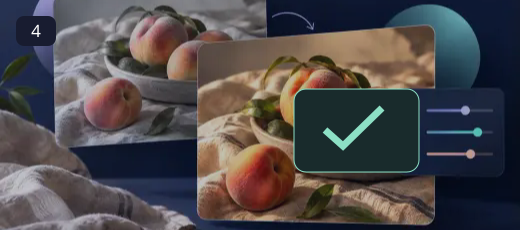

Photo Editor
Make a photo feel like the moment you remember.
A good edit starts with attention, not a dramatic filter. Lift a dark subject gently, bring overly strong colors back into balance, and keep enough detail in bright areas. Work in small steps so the finished photograph still feels believable.
How to use Photo Editor ↓How to use Photo Editor

Open a photo
Choose an image from your device to load it into the preview.

Adjust the look
Use the sliders to tune brightness, contrast, saturation and blur.

Rotate or flip
Use the transform buttons to correct orientation or mirror the photo.

Download the edit
Review the preview and export the edited photo. Keep the original until you are satisfied.
Let the subject lead
Start with framing and orientation, then adjust the light and color. Add text on a separate layer when you need a caption or headline. A transparent export works for a layered graphic, while a photographic format may be more practical for sharing. Save the original alongside the finished version.
- Quick everyday image adjustments.
- Live controls for color and blur.
- Rotate, flip and export in one editor.
Small adjustments often look more natural than pushing sliders to their extremes. Check skin tones and highlights after changing brightness or saturation, and compare the edited result with the original.
Questions, answered
Can I change brightness and contrast?
Yes. Use the adjustment sliders in the editor.
Can I rotate and flip an image?
Yes. Use the rotate and flip controls.
Is my photo uploaded?
The editor works locally in your browser and does not send the photo to LOOX.
Will this replace my original file?
The tools create a separate output. Keep the original until you have checked the exported file; the site does not provide cloud project backups.
Can I publish the result?
Use source media you own or have permission to edit. Check the destination’s requirements and the rights of anyone shown before publishing.